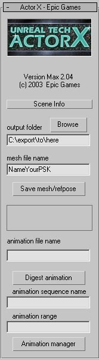
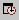

UDN
Search public documentation:
ActorXMaxTutorialKR
English Translation
日本語訳
中国翻译
Interested in the Unreal Engine?
Visit the Unreal Technology site.
Looking for jobs and company info?
Check out the Epic games site.
Questions about support via UDN?
Contact the UDN Staff
日本語訳
中国翻译
Interested in the Unreal Engine?
Visit the Unreal Technology site.
Looking for jobs and company info?
Check out the Epic games site.
Questions about support via UDN?
Contact the UDN Staff
ActorX와 Max를 사용하는 애니메이션 익스포트
문서 요약: 3DS Max의 ActorX를 사용하여 애니메이션 익스포트 하는 방법을 보여주는 튜토리얼.플러그인 설치
- Max 용 ActorX 플러그인을 다운로드하여 여러분의 plug-ins 디랙토리에 복사합니다.
- Max를 시동합니다. 그러면 ActorX가 자동으로 로드되어야 합니다. ActorX는 유틸리티 탭 아래에 있습니다 (처음으로 이것을 사용하는 경우라면, more 버튼을 클릭하면 찾을 수 있습니다).
 플러그인을 활성화할 때 오류 메시지가 나타난다면 – 가장 흔히 나타나는 것은 "failed to initialize(초기화에 실패했습니다)", 시스템이 최근의 Windows 시스템 업데이트로 업데이트 되어 있는지 확인하십시오. 그리고 http://www.microsoft.com/downloads에서 최신 Microsoft .Net 프레임웍 업데이트를 다운로드하여 설치하십시오 (download product/technology 박스에서 .net을 선택한 다음 [go]를 누릅니다). 이렇게 해도 문제가 해결되지 않으면 ActorX 페이지에서 msvcr71.dll을 구해 windows\system32 폴더 또는 plug-ins 폴더에 ActorX 플러그인과 나란히 배치하십시오.
플러그인을 활성화할 때 오류 메시지가 나타난다면 – 가장 흔히 나타나는 것은 "failed to initialize(초기화에 실패했습니다)", 시스템이 최근의 Windows 시스템 업데이트로 업데이트 되어 있는지 확인하십시오. 그리고 http://www.microsoft.com/downloads에서 최신 Microsoft .Net 프레임웍 업데이트를 다운로드하여 설치하십시오 (download product/technology 박스에서 .net을 선택한 다음 [go]를 누릅니다). 이렇게 해도 문제가 해결되지 않으면 ActorX 페이지에서 msvcr71.dll을 구해 windows\system32 폴더 또는 plug-ins 폴더에 ActorX 플러그인과 나란히 배치하십시오.
장면 설정
항상 장면 내의 모든 것들이 하나의 계층에 속해 있도록 확인하십시오. 자리 표시용 객체들과 그밖에 메쉬의 일부분이 아닌 도우미 요소들을 모두 삭제하십시오. 3DS Max는 뼈대에서 어떤 것이 뼈가 되는지에 대해 매우 융통성이 있습니다– 기본으로, 익스포터는 모든 정상적인 뼈를 비롯하여 도형, 더미(dummy), 심지어는 포인트 도우미(ActorX 플러그인 버전 2.14 이후부터)를 연결하는 모든 적절한 부모-자식 관계를, 그것들이 하나의 계층을 이루고 있는 한, 뼈대의 뼈로서 이해합니다. 축과 방향에 대해 주의하십시오: Max로부터의 익스포트시, 메쉬의 Y-좌표는 Unreal의 손잡이(축의 상대적 방향)에 순응하기 위해 부호를 반전합니다. 따라서, Max에서 Z 축이 위를 향하고 캐릭터가 X축으로 얼굴을 숙이고 Y축은 보는 이로부터 멀리 있는 화면 안을 가리키는 것은, 메쉬가 X축으로 얼굴을 숙이고 Z가 위를 향하고 Y가 보는 이를 향하는 것으로 바뀌어야 합니다. 이것은 에디터에 회전이나 마이너스 스케일링 등 추가의 메쉬 속성이 있지 않다는 전제하에서 입니다. 장면에는 여러 개의 소재가 사용될 수 있습니다. 이것들은 최종 메쉬에서 여러 개의 소재 슬롯이 될 것이며, 그 순서는 여러분이 소재의 이름에 "skinXX" 태그를 붙임으로서 강제하지 않는 한 임의로 기본 설정되어 있습니다-즉, 소재들의 이름이 Body와 Head인 경우, 이 이름을 Body_Skin00과 Head_Skin01로 바꾸는 것은 익스포터에게 .PSK 파일을 만들 때 이 순서를 따르라고 지시하는 것입니다. 개별 및 “여러 개의 하위” 소재를 모두 다 사용할 수있습니다. 후자를 사용할 경우에는, 각 하위 소재에 원하는 스킨 순서 태그를 붙이기만 하면 됩니다. 이는 뼈대 메쉬의 슬롯 순서에 영향을 미칠 뿐만아니라, 렌더링 순서를 좌우하는데도 사용될 수 있습니다.뼈대와 메쉬 익스포트
- 익스포트 하고자 하는 액터를 가지고 있는 장면을 로드합니다.
- 유틸리티 탭에서(위 참고) ActorX를 열어 ActorX 대화상자를 불러옵니다.
- 다음과 같이 필드들을 채웁니다:
- Output folder: .PSK 파일을 저장하고자 하는 디렉토리의 이름을 입력하십시오. 액터의 폴더 아래 "Unreal Files" 디렉토리를 만들 것을 권장합니다. 여기서는 Browse 버튼이 매우 유용하게 쓰입니다.
- Mesh file name: .PSK 파일의 이름을 입력하십시오. 액터의 이름을 사용할 것을 권장합니다.
- "Save mesh/refpose" 버튼을 클릭합니다. 이것은 애니메이션의 어떤 프레임도 될 수 있습니다. 모델의 참조 포즈로는 쉽게 사용할 수 있도록 느긋한, 날개 편 독수리 같은 포즈를 사용할 것이 권장됩니다.

메쉬/참조 포즈를 저장한 다음, 모든 것이 순조로우면 윈도우가 몇 개 나타날 것입니다.
애니메이션 익스포트
애니메이션의 익스포트는 두 단계로 이루어집니다. 첫째, 애니메이션(들)이 들어있는 장면을 로드하고 이를 메모리에 읽어 들이도록 애니메이션을 “소화”합니다. 이것을 이 세션에서 익스포트하고 싶은 애니메이션의 수만큼 되풀이 합니다. 둘째, 이 새 애니메이션들을 PSA 파일에 추가하고 다시 저장합니다.애니메이션 소화
- 익스포트 하고자하는 애니메이션이 들어있는 파일을 로드합니다.
- 유틸리티 탭에서 ActorX 옵션을 선택하여 ActorX 대화상자를 엽니다 (위에서 설명한대로 `more' 버튼을 클릭할 수도 있습니다).
- 필드들을 다음과 같이 채웁니다:
- Output folder: 위의 뼈대와 메쉬에서와 같습니다.
- Animation file name: 메쉬 파일과 같은 이름을 사용할 것을 권합니다 (이 파일들은 구분하는데 도움이 되도록 각각 다른 파일 확장자를 가지게 됩니다). 이 애니메이션을 기존의 .PSA 파일에 추가하기 원한다면 그 기존 .PSA 파일의 이름을 입력하십시오.
- Animation sequence name: .PSA 파일 내에서 애니메이션에 붙여주고자 하는 이름을 입력하십시오 .
- Animation range: 이 애니메이션을 정의하는 현 장면에서의 프레임들을 지정하십시오 (포맷은 `4-45'; ‘숫자, 하이픈, 숫자’).

- 첫 프레임에서 범위 슬라이더와 시간 슬라이더가 0을 나타내도록 합니다 (주: 이것은 ActorX에서의 주기적인 크래시 버그를 예방하기 위한, 저희 측의 미신적 행위입니다. 여러분 자신의 책임하에 이 단계를 건너 뛰어도 좋습니다).
- _Digest Animation_을 클릭합니다. 이 과정의 성공/실패 여부를 알려주는 윈도우는 나타나지 않습니다.
- 1-5 단계를 이 세션에서 익스포트하고자 하는 애니메이션의 수만큼 되풀이 합니다. ActorX가 크래시되어 처음부터 다시 시작해야 되는 경우에 대비해서 한 번에 너무 많은 수를 시도하지 않을 것을 권합니다.
애니메이션을 .PSA 파일에 추가
애니메이션의 소화가 끝났다면, 이것을 .PSA 파일에 추가할 준비가 된 것입니다.
- ActorX 대화상자가 열려있지 않으면 이를 불러옵니다.
- Animation manager 버튼을 클릭하여 애니메이션 매니저를 엽니다.
- 애니메이션을 기존의 .PSA 파일에 추가하는 경우에는, Load_를 클릭하여 해당 .PSA 파일을 로드합니다 (앞 세션의 3b 단계에서 이미 애니메이션의 이름이 제공되었다고 가정합니다. 만일 그렇지 않다면 _Load As... 버튼을 사용하십시오).
- 왼쪽의 animations 목록에서 방금 소화한 애니메이션을 확인할 수 있어야 합니다. 오른쪽에서는 이미 해당 .PSA 파일에 존재하는 애니메이션들을 볼 수 있습니다. .PSA 파일을 새로 만드는 경우에는 이 부분이 비어 있을 것입니다.
- 새 애니메이션을 선택하고 _-->_을 클릭하여 출력 패키지에 애니메이션을 추가합니다.
- _Save_를 클릭하여 .PSA 파일을 다시 저장합니다 (이미 애니메이션 파일의 이름이 제공되었다고 가정합니다).

일괄 처리
각 캐릭터의 애니메이션 목록이 점점 커짐에 따라 .PSA 파일의 작성 과정이 매우 긴 시간을 차지하기 시작합니다. ActorX가 주어진 폴더 내의 모든 애니메이션을 한 번에 처리하도록 하면 이 과정을 간소화 할 수 있습니다.애니메이션의 준비
일괄 처리 작업에 앞서 애니메이션을 포맷해야 합니다.- 애니메이션들은 .max 파일 포맷이어야 합니다
- 함께 처리될 애니메이션들이 모두 하나의 디렉토리 내에 있어야 합니다
- 각 파일에 대해 시작 시간과 종료 시간이 알맞게 설정되어 있어야 합니다. 3D-Studio에서 Time Configuration 버튼

을 클릭하여 이를 알맞게 설정하십시오. - 파일들의 이름은 엔진 내에서 원하는 애니메이션의 이름과 같아야 합니다.
애니메이션 익스포트
애니메이션들이 적절하게 설정되었다면, 다음의 순서를 따라 그것들을 모두 .PSA 파일로 익스포트 하십시오.- ActorX의 Output Folder 필드에 원하는 .PSA 파일의 위치를 기입합니다
- Animation File Name 필드에 원하는 .PSA 파일 이름을 기입합니다.
- 도구의 Actor X - Setup 섹션에서, _cull unused dummies_를 체크합니다.
- 역시 Actor X - Setup 섹션에서 _Process all Animations_를 클릭합니다. ActorX가 이 애니메이션들을 모두 어느 폴더로 보낼 것인지 물을 것입니다. 폴더를 선택하고 _Okay_를 클릭합니다.
- 이제 애니메이션들이 임포트 되었습니다. Animation Manager_를 클릭하여 애니메이션 매니저를 엽니다(위 참고). 왼쪽의 목록은 여러분이 지금까지 소화한 애니메이션들입니다. 오른쪽의 컬럼은 _Animation File Name 필드에서 선택한 .PSA 파일에 있는 애니메이션들의 목록입니다.
- 왼쪽의 컬럼에서 익스포트 하고자 하는 애니메이션을 선택하고 Copy ==> 버튼을 클릭, 선택된 애니메이션들을 .PSA 애니메이션이 있는 지역에 복사합니다.
- _Save_를 클릭합니다. .PSA 파일이 만들어질 것입니다.
추가의 ActorX 옵션
Animation manager 버튼 아래의 `ActorX - Setup' 섹션에 많은 옵션들이 있는 것을 알아채셨을 것입니다. 이 옵션들을 순서대로 살펴보겠습니다.Persistent Settings and Paths (지속되는 설정 및 경로)
이 두 옵션들은 말 그대로입니다; 이 옵션들이 체크되면 그 위 필드의 설정을 보존하여, 메쉬나 애니메이션을 익스포트할 때마다 필드를 다시 입력하지 않아도 됩니다.Skin Export(스킨 익스포트)
이 옵션들은 익스포트할 도형/애니메이션을 결정할 때 어떤 조건들이 충족되어야 할지를 판단합니다.All Skin-Type(모든 스킨 타입)
이것이 체크되면, 파일 내의 스킨/체격 변경자를 가진 메쉬들이 모두 익스포트 됩니다. 장면에 변형 가능한 스킨이 하나라도 있을 경우에는 반드시 이 옵션이 선택되어야 합니다. 이 옵션이 선택되지 않으면 메쉬들은 모두 단단하고, 각각 하나의 뼈에 의해 제어되는 것으로 추정됩니다.All Textured (텍스처된 것 모두)
텍스처를 가진 도형들이 모두 익스포트 됩니다.All Selected(선택된 것 모두)
현재 선택된 도형들이 모두 익스포트 됩니다. Invert 체크박스는 선택되지 않은 도형들을 모두 익스포트 합니다.Force Reference Pose T=0 (참조 포즈 T=0 강제)
이 옵션은 T=0에서의 포즈를 참조 포즈로 사용하도록 강제합니다. 이것은 오직 다른 프레임에도 애니메이션을 가지고 있고, 슬라이더의 첫번째 프레임이 애니메이션에서 프레임 0이 아닌 파일로부터 PSK를 익스포트하는 경우에만 유용합니다. 기본으로, 엔진은 PSK 파일의 익스포트에 활성 슬라이더 범위의 첫 프레임을 사용하게 됩니다. 이것이 저희가 프레임 0을 활성 범위의 일부로 하도록 권장하는 이유입니다. 대체로, 여러분은 항상 잘 알려져 있는 특별 포즈의 정적 참조 포즈로부터 PSK를 익스포트하여, 무작위 포즈를 참조 포즈로서 익스포트할 가능성이 없도록 해야 합니다 .Tangent UV Splits (탄젠트 UV 분할)
이 옵션을 항상 꺼두십시오. 아니면 이 옵션을 무시하십시오.Bake Smoothing Groups (끝마무리 그룹 굽기)
UnrealEd에서는 뼈대 모델의 끝마무리가 좀 이상하게 처리됩니다. 캐릭터 모델 위에 마무리 그룹을 두려고 하면, 익스포터는 모델을 그룹의 엣지를 따라 잘라 그 섹션을 자신의 별도의 조각으로 만듭니다. 이 과정에는 마무리된 엣지를 따라 정점들을 나누는 일이 수반됩니다. 그 다음에 익스포터는 개별 조각을, 그 조각이 더 큰 ‘연결된’ 메쉬의 일부분일지라도, 그 자체로서 마무리하려고 합니다. 다시 말해, 여러분은 끝마무리를 하는 댓가로 정점의 수를 늘리게 됩니다. 끝마무리 그룹이 많을수록 더 많은 정점들을 가지게 됩니다. 그러므로 뼈대 모델에서는 끝마무리 그룹이 권장되지 않습니다; 이 옵션을 체크하지 않을 것을 권합니다.Bones (뼈)
Cull Unused Dummies (사용하지 않는 더미 잘라내기)
뼈 사슬의 맨 끝에 더미들을 사용하고 있는 경우, 이 옵션은 그것들을 제거하여 메모리를 절약합니다.Cull Root Dummy(루트 더미 잘라내기)
이 옵션은 무효화되었습니다.Motion(모션)
Fix Root Net Motion(루트 넷 모션 고정)
모델이 루트 뼈가 움직이도록 애니메이트 되어 있다면, 이 옵션으로 그 모션을 무효화할 수 있습니다. 이는 Max에서 전진으로 변환하는 주행 주기를 만드는 경우, 이 옵션은 UnrealEd에서 그 모델이 제 자리에서 달리고 있는 것처럼 보이게 한다는 뜻입니다 .Hard Lock (잠금해제 방지)
이 옵션은 무시하십시오.Logfiles/No Log Files (로그파일/로그파일 없음)
이름 그대로입니다. 이 옵션들은 무엇인가 정확하게 익스포트되고 있지 않다는 의심이 생기는 경우 이를 확인할 수 있는 편리한 소스입니다. 여기에는 계층 정보를 수반한 뼈 목록, 정점/면/프레임 번호 및 소재 슬롯 번호 등 다양한 정보들이 들어 있습니다. 뼈대 및 스킨 데이터가 예상대로 익스포트 되었다는 것을 확인하는 것 이외에, 뼈 컨트롤러나 첨부에 대해 내부적으로 사용되는 뼈의 이름이 무엇인지 알기 원할 경우 그것을 확인할 수도 있습니다.Script Template (스크립트 템플릿)
이전에는 모델 및 애니메이션을 Unreal에 임포트 하기 위해 UnrealScript?가 필요했었습니다. 고맙게도, 이것은 더 이상 필요하지 않습니다. 자신이 하는 일에 대해 잘 알고 있는 한은 이것을 무시하십시오.MaxScript를 사용한 일괄 익스포트
플러그인 개정 2.18과 함께, 모든 주요 익스포트 명령 및 스위치들이 MaxScript 명령으로서 도입되었습니다. 여러 파일로부터 많은 수의 애니메이션 시퀀스를 저장하는 등의 반복적인 업무의 자동화에 스크립트를 사용할 수 있습니다. 명령어들은 MaxScript 의 예 파일에 자세히 설명되어 있습니다. 일괄 처리가 방해받지 않고 진행되도록 하기 위해 MaxScript 로부터의 익스포터 명령어 사용은, 오류를 제외하고 스크립트를 멈추게 하는 일반적인 ActorX의 확인 대화상자 및 팝업들을 모두 차단합니다 .문제 해결
"Unmatched Node ID(노드 ID가 일치하지 않습니다)" 경고
흔히 부딪치는 문제가 "Unmatched node ID(노드 ID가 일치하지 않습니다)"라는 경고입니다. 이것은 장면중에 익스포터가 뼈에 연합할 수 없는 메쉬 도형이 있다는 뜻입니다. 예를 들면, 메인 계층에 올바르게 링크되어 있지 않지만, Physique 또는 Skin 변경자를 가지고 있는 메쉬의 조각 같은 것입니다. 위의 설정 노트에서 간단히 설명한 것처럼, 장면에 있는 모든 뼈 및 뼈로서 행동하는 모든 객체들은 중국적으로 뼈대의 루트 뼈/루트 객체에 링크될 수 있는 하나의 트리 같은 계층에 속해있어야 합니다. 어떠한 두 발 캐릭터 또는 더미 ‘도우미’ 도형에도 실수로 텍스처링이 되어 있지 않도록 해야 합니다. 그리고 필요하지 않을 때는 (스킨들이 모두 순수한 Physique 또는 Max 스킨일 경우) ActorX 설정 패널의 "Skin Export"에서 'all textured' 옵션의 체크를 해지하십시오."Invalid number of Physique bone influences(Physique 뼈 영향의 수가 적법하지 않습니다)" 경고
대개 이 경고는 메쉬의 정점이 이에 영향을 주는 뼈를 하나 또는 그 이상 가지고 있지만, 그것들이 적법하지 않은 (아마도 0) 무게라는 것을 가리킵니다. 수동으로 무게를 조정해 보십시오(Physique 또는 Skin 변경자); 이것이 가능하지 않으면 메쉬의 스키닝 설정을 다시 하십시오.다운로드
- ActorXMaxScriptExample.ms: 애니메이션 익스포트를 위한 MaxScript? 예제 파일.